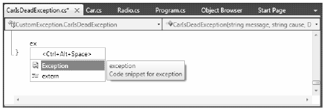

Given that all .NET exceptions are class types, you are free to create your own application-specific exceptions. However, due to the fact that the System.SystemException base class represents exceptions thrown from the CLR, you may naturally assume that you should derive your custom exceptions from the System.Exception type. You could do this, but you could instead derive from the System.ApplicationException class:
public class ApplicationException : Exception { // Various constructors. }
Like SystemException, ApplicationException does not define any additional members beyond a set of constructors. Functionally, the only purpose of System.ApplicationException is to identify the source of the error. When you handle an exception deriving from System.ApplicationException, you can assume the exception was raised by the code base of the executing application, rather than by the .NET base class libraries or .NET runtime engine.
While you can always throw instances of System.Exception to signal a runtime error (as shown in the first example), it is sometimes advantageous to build a strongly typed exception that represents the unique details of your current problem. For example, assume you wish to build a custom exception (named CarIsDeadException) to represent the error of speeding up a doomed automobile. The first step is to derive a new class from System.Exception/System.ApplicationException (by convention, all exception classes end with the “Exception” suffix; in fact, this is a .NET best practice).
Note As a rule, all custom exception classes should be defined as public classes (recall, the default access modifier of a non-nested type is internal). The reason is that exceptions are often passed outside of assembly boundaries, and should therefore be accessible to the calling code base.
Create a new Console Application project named CustomException, and copy the previous Car.cs and Radio.cs files into your new project using the Project ? Add Existing Item menu option (for clarity, be sure to change the namespace that defines the Car and Radio types from SimpleException to CustomException). Next, add the following class definition:
// This custom exception describes the details of the car-is-dead condition. public class CarIsDeadException : ApplicationException {}
As with any class, you are free to include any number of custom members that can be called within the catch block of the calling logic. You are also free to override any virtual members defined by your parent classes. For example, we could implement the CarIsDeadException by overriding the virtual Message property.
As well, rather than populating a data dictionary (via the Data property) when throwing our exception, our constructor allows the sender to pass in a time stamp and reason for the error. Finally, the time stamp data and cause of the error can be obtained using strongly typed properties:
public class CarIsDeadException : ApplicationException { private string messageDetails = String.Empty; public DateTime ErrorTimeStamp {get; set;} public string CauseOfError {get; set;} public CarIsDeadException(){} public CarIsDeadException(string message, string cause, DateTime time) { messageDetails = message; CauseOfError = cause; ErrorTimeStamp = time; } // Override the Exception.Message property. public override string Message { get { return string.Format("Car Error Message: {0}", messageDetails); } } }
Here, the CarIsDeadException class maintains a private field (messageDetails) that represents data regarding the current exception, which can be set using a custom constructor. Throwing this exception from the Accelerate() method is straightforward. Simply allocate, configure, and throw a CarIsDeadException type rather than a System.Exception (notice that in this case, we no longer need to fill the data collection manually):
// Throw the custom CarIsDeadException. public void Accelerate(int delta) { ... CarIsDeadException ex = new CarIsDeadException (string.Format("{0} has overheated!", PetName), "You have a lead foot", DateTime.Now); ex.HelpLink = "http://www.CarsRUs.com"; throw ex; ... }
To catch this incoming exception, your catch scope can now be updated to catch a specific CarIsDeadException type (however, given that CarIsDeadException “is-a” Application.Exception, it is still permissible to catch a Application.Exception as well):
static void Main(string[] args) { Console.WriteLine("***** Fun with Custom Exceptions *****\n"); Car myCar = new Car("Rusty", 90); try { // Trip exception. myCar.Accelerate(50); } catch (CarIsDeadException e) { Console.WriteLine(e.Message); Console.WriteLine(e.ErrorTimeStamp); Console.WriteLine(e.CauseOfError); } Console.ReadLine(); }
So, now that you understand the basic process of building a custom exception, you may wonder when you are required to do so. Typically, you only need to create custom exceptions when the error is tightly bound to the class issuing the error (for example, a custom file-centric class that throws a number of file-related errors, a Car class that throws a number of car-related errors, a data access object that throws errors regarding a particular database table, and so forth). In doing so, you provide the caller with the ability to handle numerous exceptions on a descriptive error-by-error basis.
The current CarIsDeadException type has overridden the virtual System.Exception.Message property in order to configure a custom error message, and has supplied two custom properties to account for additional bits of data. In reality, however, you are not required to override the virtual Message property, as you could simply pass the incoming message to the parent’s constructor as follows:
public class CarIsDeadException : ApplicationException { public DateTime ErrorTimeStamp { get; set; } public string CauseOfError { get; set; } public CarIsDeadException() { } // Feed message to parent constructor. public CarIsDeadException(string message, string cause, DateTime time) :base(message) { CauseOfError = cause; ErrorTimeStamp = time; } }
Notice that this time you have not defined a string variable to represent the message, and have not overridden the Message property. Rather, you are simply passing the parameter to your base class constructor. With this design, a custom exception class is little more than a uniquely named class deriving from System.ApplicationException, (with additional properties if appropriate), devoid of any base class overrides.
Don’t be surprised if most (if not all) of your custom exception classes follow this simple pattern. Many times, the role of a custom exception is not necessarily to provide additional functionality beyond what is inherited from the base classes, but to supply a strongly named type that clearly identifies the nature of the error, so the client can provide different handler-logic for different types of exceptions.
If you wish to build a truly prim-and-proper custom exception class, you would want to make sure your type adheres to .NET best practices. Specifically, this requires that your custom exception
Now, based on your current background with .NET, you may have no idea regarding the role of attributes or object serialization, which is just fine. I’ll address these topics later in the text (see Chapter 15 for information on attributes and Chapter 20 for details on serialization services). However, to complete our examination of building custom exceptions, here is the final iteration of CarIsDeadException, which accounts for each of these special constructors:
[Serializable] public class CarIsDeadException : ApplicationException { public CarIsDeadException() { } public CarIsDeadException(string message) : base( message ) { } public CarIsDeadException(string message, System.Exception inner) : base( message, inner ) { } protected CarIsDeadException( System.Runtime.Serialization.SerializationInfo info, System.Runtime.Serialization.StreamingContext context) : base( info, context ) { } // Any additional custom properties, constructors and data members... }
Given that building custom exceptions that adhere to .NET best practices really differ by only their name, you will be happy to know that Visual Studio 2010 provides a code snippet template named "Exception" (see Figure 7-1) that will autogenerate a new exception class that adheres to .NET best practices. (Recall from Chapter 2, a code snippet can be activated by typing its name [exception in this case] and pressing the Tab key twice.)
Figure 7-1. The Exception code snippet template